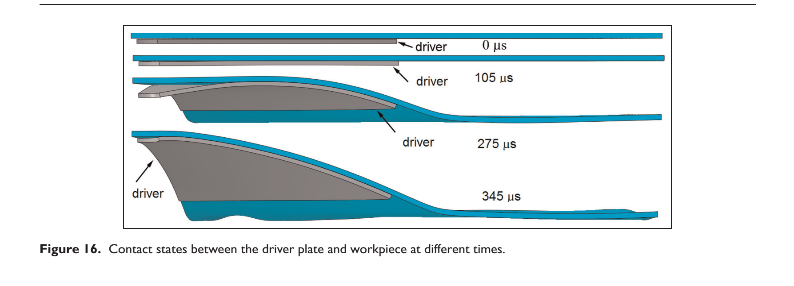

Journal article
Experimental and numerical investigation of electromagnetic bulging of titanium alloy Ti-6Al-4V at room temperature
Research at a glance
{kind=link}

Abstract
In this article, electromagnetic bulging of high-strength, low-conductivity Ti-6Al-4V using a T3 copper driver plate at room temperature was described. The investigation was conducted employing numerical simulation method. Numerical prediction of the deformation contour and thickness distribution were closely correlated with the experimental results. The distribution of electromagnetic force on the driver plate and impact force between the driver plate and the workpiece varying with time was obtained. Besides, deformation velocity distribution and strain rate on the workpiece were determined by analyzing the deformation process. Energy efficiency of the process was determined to be 1.34%. Distribution of total electromagnetic force over time is characteristic of a sine-squared attenuation function. Velocity of the second impact near the center zone is 229.36 m/s with a corresponding impact pressure of 3.42 GPa. The results of this investigation are significant in the design of an improved process of electromagnetic forming of Ti-6Al-4V and other low-conductivity metals.
Keywords
Recommended citation
Fen-qiang Li, Jian-hua Mo, Jian-jun Li, Liang Huang, Hai-yang Zhou, and Li Qiu (2015). Experimental and numerical investigation of electromagnetic bulging of titanium alloy Ti-6Al-4V at room temperature. Proceedings of the Institution of Mechanical Engineers, Part B: Journal of Engineering Manufacture, 229(10), 1753–1763. https://doi.org/10.1177/0954405414539296